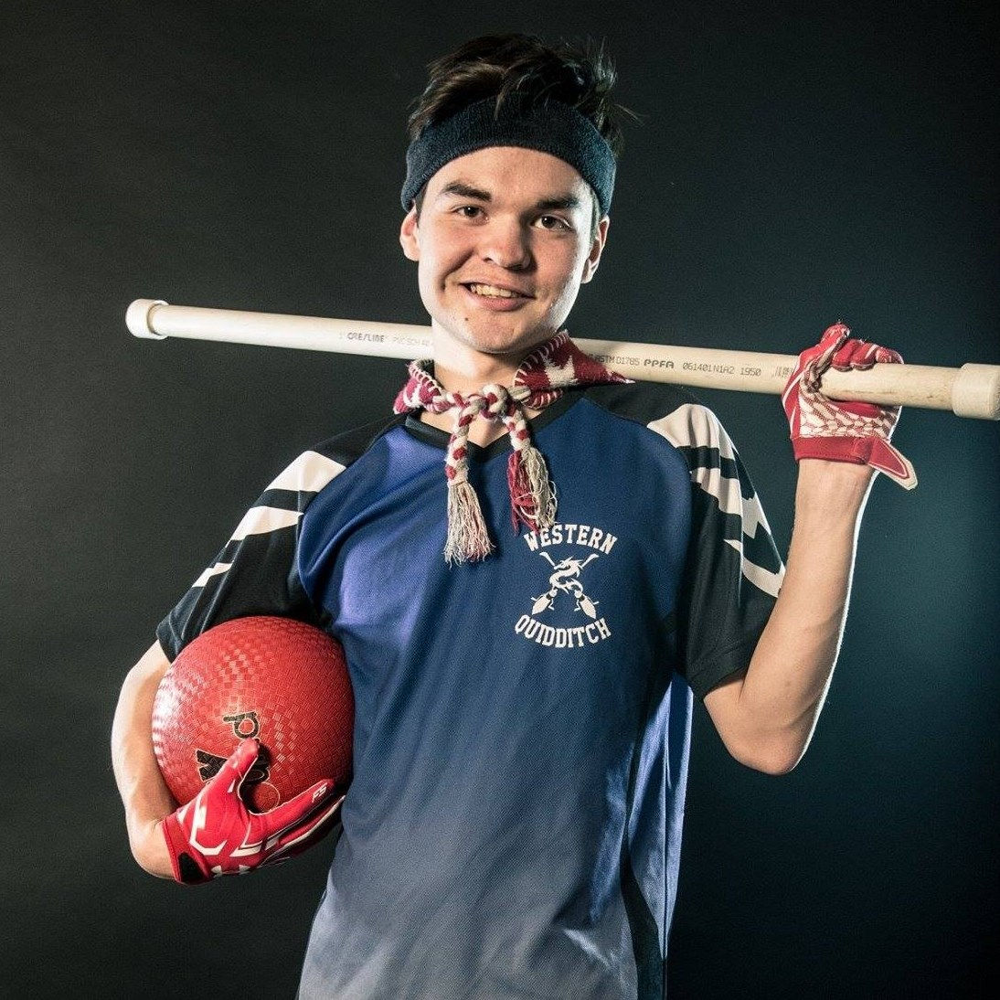
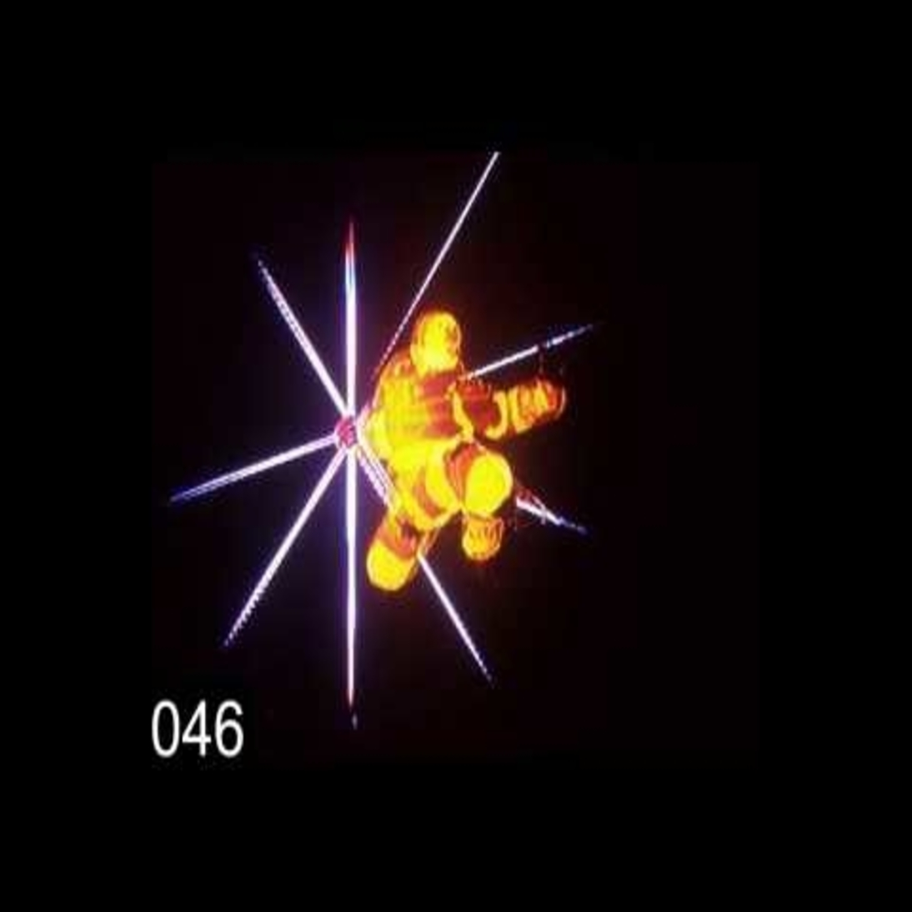
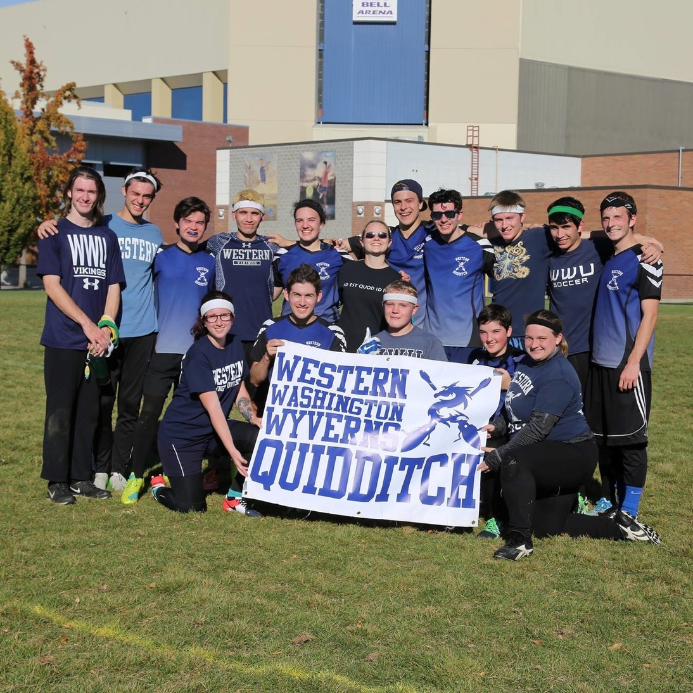

Shane Baden
| Computer Science Major/Math Minor at Western Washington Unversity
| Artist
Qualifications
Languages learned so far:
-Python
-Java (Familiar with Atom/Jgrasp)
-C (Familiar with CLion)
-HTML (Familiar with Notepad++)
-CSS
-JavaScript (Familiar with JQuery)
-(Familiar with Adobe photoshop, paint, and GIMP)
-(View some of my
projects)
Personal Skills:
-Artistic (Check out my
art)
-Self-motivated
-Enjoys challenges
-Creative
-Works well in a team
By Shane Baden
Written on 7/16/2017
---> Hey there! Welcome to my website! Here, you can view and learn things about me,
such as learn about my hobbies, or my skills! Right now, I've taken a
passion to computer science, and am enjoying the challenges
the come along with it. Some of my hobbies include biking, running,
drawing, programming, and my personal favorites
are quidditch and melee, both of which you
can view more about
below!
Personal Hobbies
Perhaps the thing that has driven me to study computer science has been my dedication to melee. Every since I was a kid,
melee has been the most fun game I've ever played. For those that don't know, melee is a fighting game starring some famous
nintendo characters. Ever since its release, the scene for the game has been growing exponentially, with fans creating new ways
to play and win the game by analyzing the game down to the frame-by-frame data. I was inspired by the dedication, and have
joined the fanbase with the hopes to one day contribute my coding skills and help develop future melee projects.
Along with melee, I have found the utmost joy playing Quidditch. No, not the flying-around-on-a
-broomstick-in-the-air-version of Quidditch, silly, I mean the run-on-land-with-a-broom-stuck-between-your-legs Quidditch
we magic-less muggles play. I play as a beater, who in the game is a person who throws balls–called bludgers–at players
to make them temporarily leave the game. This gives my teammates opportunity to score! Teamwork is essential in this game
by the way;
coordinated teams that blend their players together tend to win more games. I know that isn't much, but if you'd like, learn more with this
video!
〈
〉


